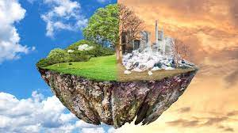

CONTENEDOR MARRÓN
En este contenedor se depositan:
- FRUTA Y VERDURA
- FLORES Y RESTOS DE JARDINERÍA
- RESTOS DE PESCADO Y MARISCOS
- SERVILLETA BLANCA DE PAPEL
- CORCHO NATURAL
- BOLSA DE INFUCIÓN
En este contenedor NO se depositan:
- Pañales,toallitas y otros productos personales
- Podas
- Pañuelo de papel usado
- Cajas de madera
- Excremento de animales
No arruinemos la tierra es dificil encontrar un buen planeta.
Recuerda No tirar basura que se le puede dar un buen uso.
Y por último recuerda poner en práctica las 3 r, que son: Reducir, Reutilizar y Reciclar.
Nuestro planeta es el único hogar que tenemos, tratemos de cuidarle un poco más antes de terminar todos los recursos que nos quedan de él.  
 Tratemos de evitar que esto empeore.
Tratemos de evitar que esto empeore.